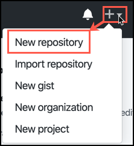
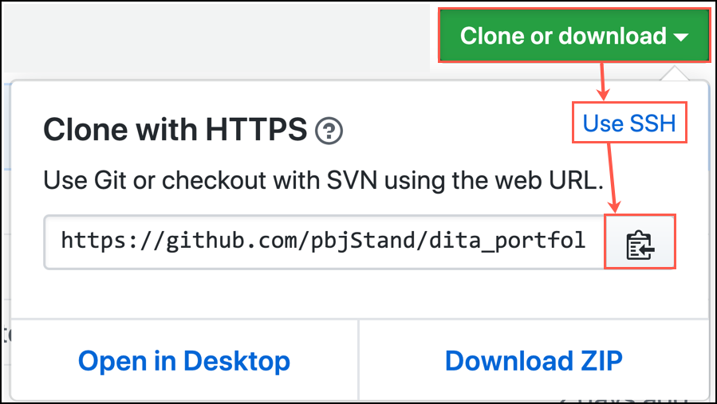
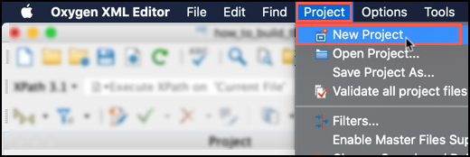
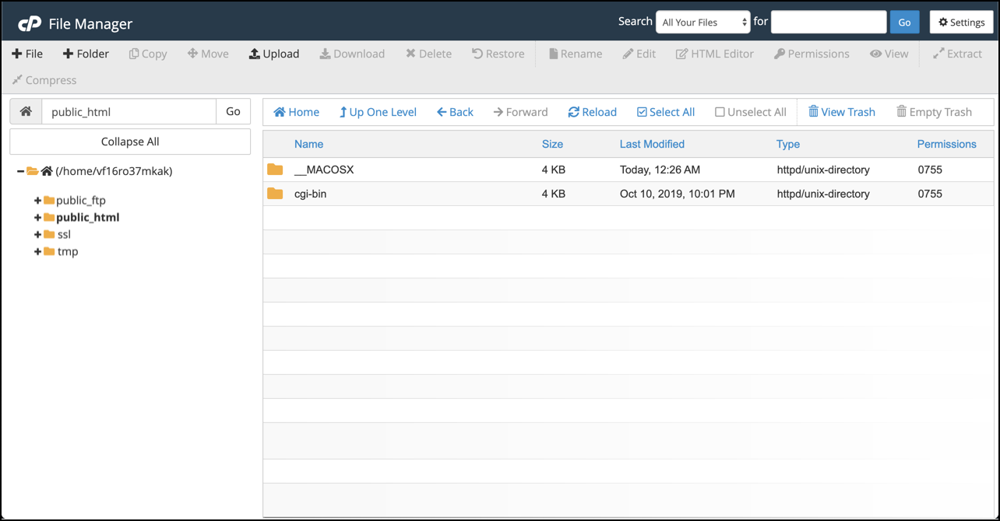

build and deploy this website
This procedure steps through the process that was undertaken to build and deploy this website on a Mac.
Note: Under normal circumstances, a procedure like this would be broken into
several tasks with many assumptions called out. Keep in mind that the purpose of
this procedure is to demonstrate an ability to leverage a breadth of DITA authoring
capabilities.
The following tools were utilized for this task:| Tool | Purpose or Role |
|---|---|
| Oxygen XML Editor | Used to author the source files and publish the output web files |
| Snagit | Used for screenshots and playable gifs |
| GoDaddy | Used to purchase domain, hosting, and web security services |
| Homebrew | Used as prerequisite to installing Git |
| Git | Used version controlling the source and output files |
| GitHub | Used as source and output file repository |
| Terminal | Used as Git CLI |
Obtain Oxygen XML Editor
- In a browser, navigate to https://www.oxygenxml.com/xml_editor/download_oxygenxml_editor.html.
-
Click Download.
A form appears alongside the download pop-up.
- Select a location to save the Oxygen XML Editor download.
- Fill-out the form with a valid email address in order to receive the 30-day trial license.
- Click Get Trial License.
- Check email and copy the trial license text.
- Open the Oxygen XML Editor download package.
- Paste the license information.
Install Git, create a Git repository in GitHub, add SSH public key to
GitHub, and clone repository locally
- Open Terminal.
-
In a browser, navigate to https://brew.sh/ and copy the following "Install Homebrew" command and
paste it into Terminal.
$ /usr/bin/ruby -e "$(curl -fsSL https://raw.githubusercontent.com/Homebrew/install/master/install)" - Hit return to install Homebrew.
-
After the Homebrew installation completes, navigate to https://git-scm.com/book/en/v1/Getting-Started-Installing-Git and copy the following command in
Terminal.
$ brew install git - Hit return to install Git.
- In a browser, navigate to https://github.com.
- Login with credentials.
-
In the top toolbar, click .
A form will appear.
- In the Repository name field, type dita_portfolio.
- In the Description field, type a description.
- Keep the Public repository setting selected.
- Select the checkbox to Initialize this repository with a README.
- Click Create repository.
-
From the repository page, click Clone or download.
A dropdown menu appears.
- In the upper right of the dropdown menu, click Use SSH.
-
Click the copy button to copy the clone repository path which is in the
following format:
git@github.com:<username>/<repository name>.git -
In Terminal, navigate to the desired root folder for the Git repository with
the cd command.
For example:
$ cd dita_portfolio -
Run the following command:
$ git clone git@github.com:pbjStand/dita_portfolio.gitExperience an error and bang head against the table since the SSH keys were forgotten. -
Navigate to the public key and copy it.
If not familiar with SSH keys, use the following guidance from GitHub: https://help.github.com/en/articles/generating-a-new-ssh-key-and-adding-it-to-the-ssh-agentDANGER: Do NOT copy the private key or allow the private key to be exposed to anyone or anywhere. Always use the key file that ends with
.pub. If the private key is ever exposed, delete the keys and generate new ones. - In a browser, navigate to https://github.com.
- In the top toolbar, click on the profile picture then Settings.
- From the Settings page, click SSH and GPG Keys.
- Click New SSH key.
- Paste the public key.
- Click Add SSH key.
-
Repeat Step 26.
Terminal will prompt for a passphrase.
-
Enter passphrase for the key.
The dita_portfolio repository is established locally.
Authoring website source files and generating website output
files
- Open the Oxygen XML Editor application.
-
From the Mac menu bar, select .
The new project dialog box appears.
- For the new project local, select the local dita_portfolio folder.
- Click Save.
-
Create DITA document.
This means the source files such as DITA maps and topics.
-
From the Mac toolbar, select .
A pop-up will appear.
- Select the DITA Map WebHelp Responsive output type.
-
Click Apply.
This will generate the website output files.
Stage, commit, and push files from local repository to remote GitHub
repository
-
In Terminal, run the following command from the
dita_portfolio root directory:
$ git add -AThis will stage all repository changes (for example, file additions and file removals). -
Now run the following comand:
$ git commit -am '<insert commit message>'This takes a snapshot of files in the version history. -
Last, run the following command:
$ git pushTerminal will prompt for a passphrase. -
Enter passphrase for the key.
The latest committed local dita_portfolio version is pushed to the remote GitHub repository.
Create zip of website output files
- Open Finder.
- Navigate to dita_portfolio/out/webhelp-responsive.
-
Select all files inside the
webhelp-responsivefolder with Cmd-A. -
On the selected files, .
 All website files are now contained in the
All website files are now contained in thewebhelp-responsivefolder as file called Archive.zip.
GoDaddy purchase, file upload, and security enhancement
- In a browser, navigate to https://www.godaddy.com.
-
Buy domain, hosting, and security services.
Condensing this step for everyone's sake. The outcome is that the pbjWrites.work domain is now associated with the hosted service.
-
From the GoDaddy My Products tab under the Web Hosting section, click
Manage.

-
From the web hosting management page, click the File
Manager.

-
Double click the public_html folder.
This folder is where website files are exposed to the internet.
-
Click Upload.
A new upload page appears.
- Select (or drag and drop in the window) the Archive.zip file.
- Go back to the File Manager page.
- Click Reload to refresh the files.
-
In the file list, find the Archive.zip and .
The files are now uncompressed and the website is available momentarily. Check pbjWrites.work to verify.
- To ensure that the website visitors feel safe, consider redirecting HTTP traffic to HTTPS with the following GoDaddy guidance: https://www.godaddy.com/help/redirect-my-cpanel-website-to-https-27870